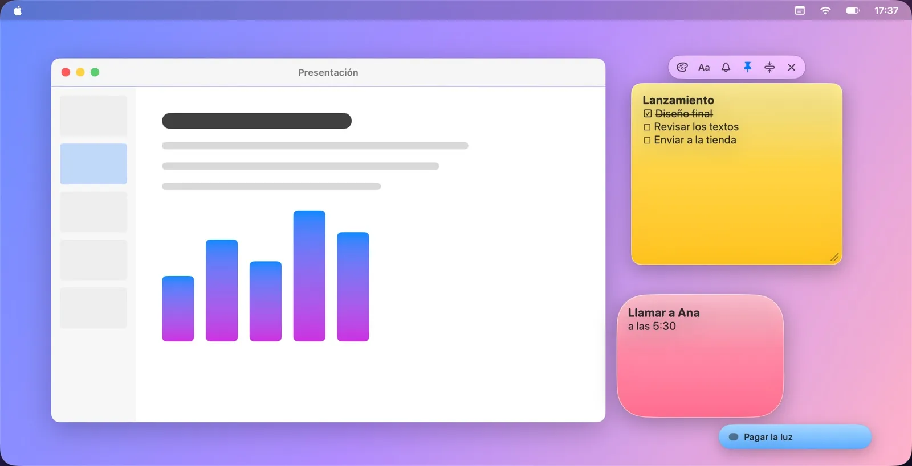
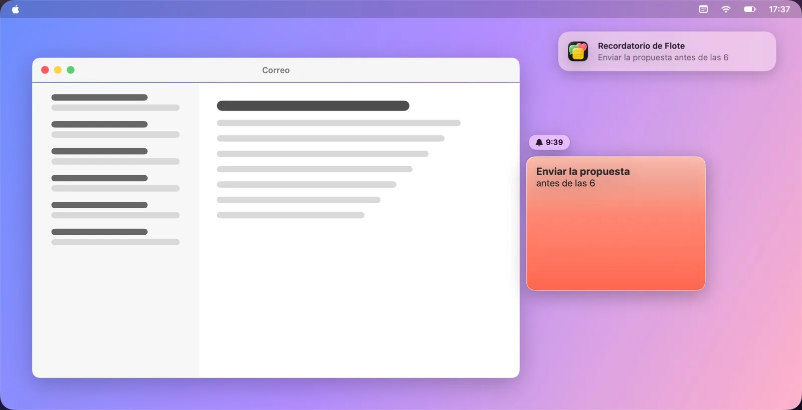
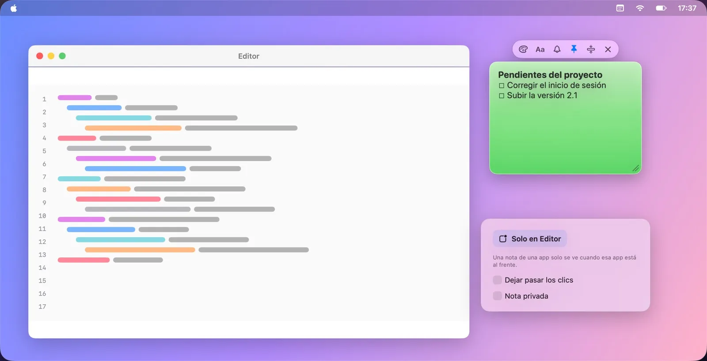
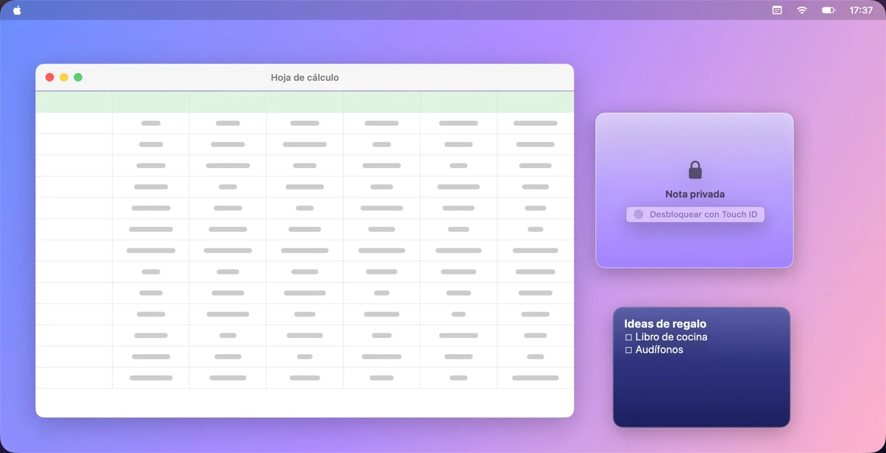
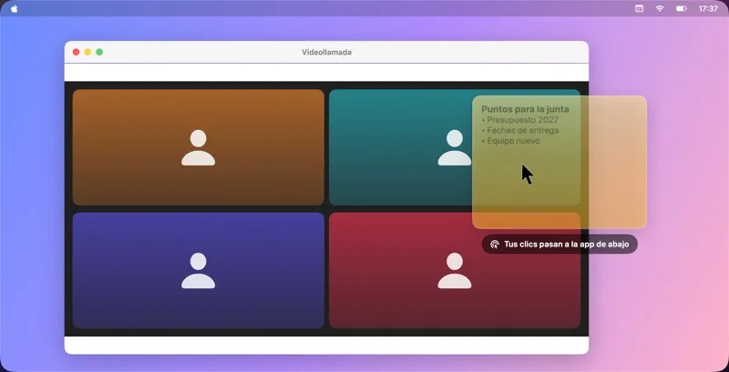
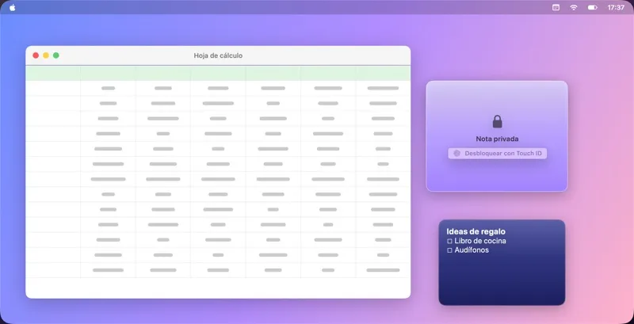
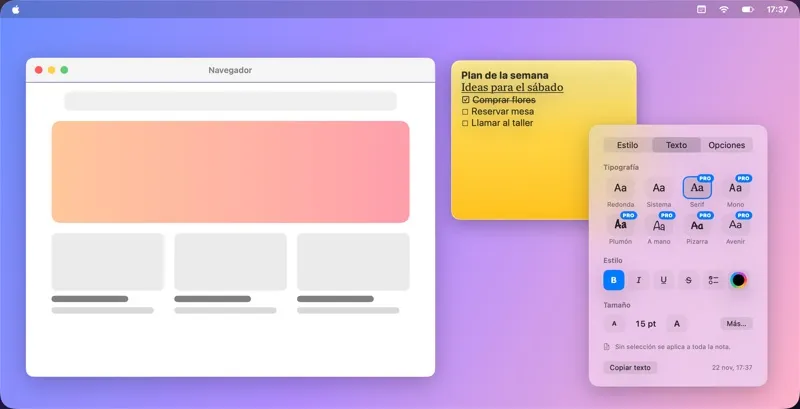
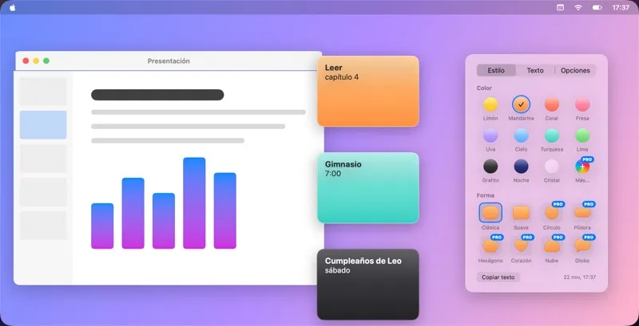
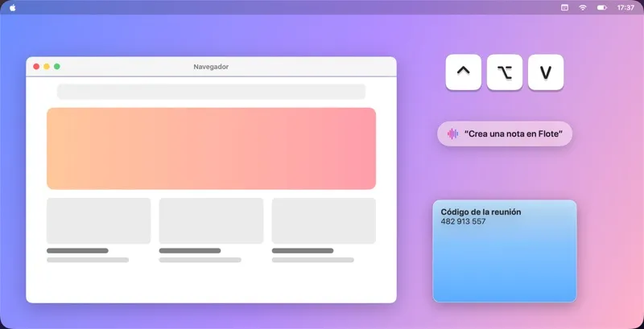

Flote
Gratis
Para siempre
- Notas ilimitadas encima de todas tus apps
- 11 colores, texto enriquecido y casillas
- Captura rápida, Siri y Atajos
- Prueba cada función Pro en una nota
- Papelera y exportar a Markdown
Flote para Mac
Notas adhesivas que flotan sobre todas tus apps y en todos tus escritorios, como una ventana flotante. Escribe, marca pendientes y sigue trabajando.

Modo fantasma
Convierte una nota en fantasma: se vuelve tenue y tus clics pasan directo a la app de abajo. Lee tus puntos durante una videollamada sin hacer clic donde no querías.
Todo en una nota
Recordatorios
Elige una hora y Flote trae la nota aunque estuviera oculta o contraída: aparece, rebota y te manda un aviso. Una cuenta regresiva te dice cuánto falta.

Notas por app
Los pendientes del proyecto en tu editor de código. Los puntos de la junta en tus videollamadas. Una nota puede aparecer solo cuando cierta app está al frente, y se hace a un lado cuando cambias.

Hecha para tu Mac
Notas privadas
Bloquea una nota con Touch ID o la contraseña de tu Mac. Se cifra en tu Mac, nunca sale en capturas ni al compartir pantalla, y se bloquea sola cuando te alejas.






Precio
Sin suscripciones, sin anuncios y sin cuentas.
Gratis
Para siempre
Pago único
Un solo pago. Sin suscripción. Compartir en familia.
macOS 15 o posterior
Gratis en la Mac App Store, en 35 idiomas.
Muy pronto en la Mac App Store.